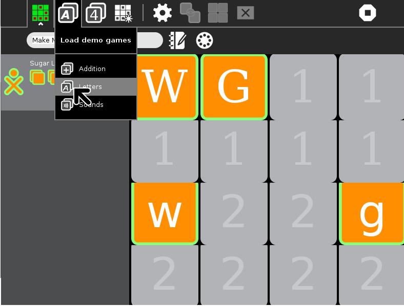
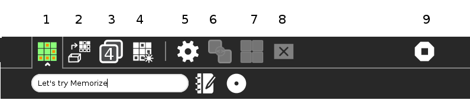
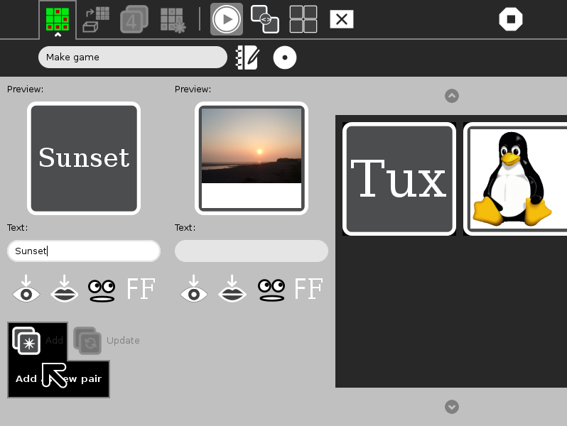
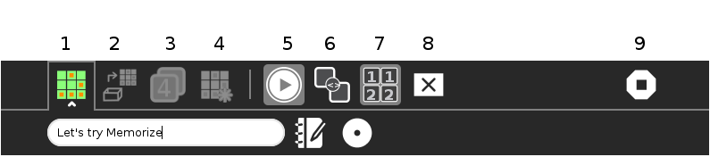
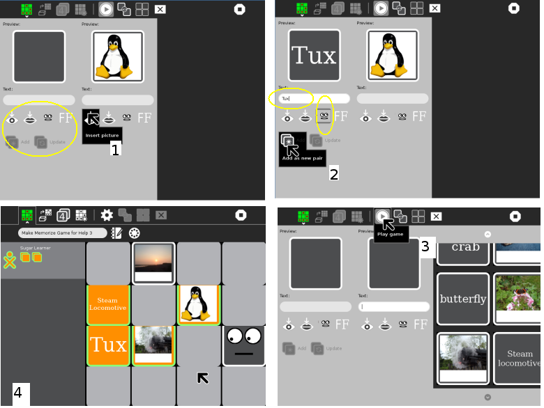
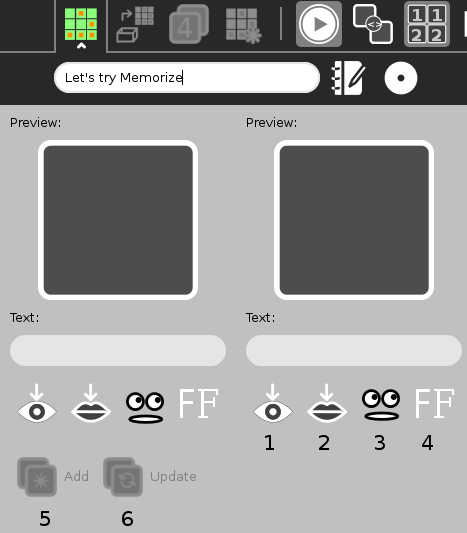

Memorize¶
About¶
This Activity allows learners to take the learning process in their own hands, as they play but also create their own games. The game has matching pairs of what are clickable tiles, or blocks. The card pairs are composed of text, sound or images. The children turn over the cards to match words, words and sounds, words and pictures, or pictures and sounds. There are a few default games loaded. These images, sounds and text can be extended to animations or movie snippets. Players of Memorize can play together across multiple machines.
Using Memorize¶
Memorize comes with two modes, Play, and Edit game. In Edit game you can make a brand new Memorize game, or edit one of the demo games supplied.
In Play mode the Activity has three sets of tiles for demo games, Numbers, Letters and Sounds. Memorize supports Sharing so you can play the game with others.
The image below shows the Letters demo being selected, and play in progress. Notice that the unturned tiles, are in two sets, tiles are numbered with a 1 in the top part of the gameboard, and with a 2 in the lower half. This is called a Grouped tile game.
(In the Sounds demo, there is an example of an Ungrouped game, that is, the tiles are randomly spread over the gameboard.)
The player has already matched two pairs, by clicking on the tiles. Matched tiles are highlighted and a score is shown on the left side. If the pair of tiles do not match, they are flipped back over after a short time, in which you try to memorize them.
When you play a Grouped tile game, the prompt will be in the top half of the gameboard, and the answer will be hidden under one of the squares in the bottom half. You have to guess where the matching tile might be. Move the cursor down and notice that the bottom rows are now ‘live’ –each square is highlighted as you cross it. Select your guess. After you have made a few guesses, you will start to remember where the matching tiles might be.

Toolbar tabs and buttons in Play do the following:

Activity tab. In the first field name the game. The Description button allows you to add a description to the Journal entry. Thirdly select Private, or My Neighbourhood, see Sharing.
Load demo game - Select preloaded demo games from list.
Select the Grid Size, 4x4, 5x5, or 6x6.
Restart Game.
This is the switch to Edit game. Create a new game or edit the current game.
The Edit game mode icons are grayed out.
grayed out.
grayed out.
Stop, or close the Activity.
Creating a Game¶
Pressing the Edit game button, results in editing the existing game. If you open Memorize from Resume, that is, an existing named file, and press the Edit game button, you will change that file, and the older file will be overwritten in the Journal. In this case the older game is lost.
To create a fresh game, open Memorize, from the Home View, Start new. Press the Activity tab. Type in a name for the game.
Memorize will remind you of this difference in behavior. If you rename an existing game, and then press the Clear all tiles button, you will be prompted Do you want to … . If you press Clear, this will overwrite the previous game in your Journal. (You cannot overwrite a demo game itself. The demo games will always be there if you choose to edit a demo game, and clear its tiles.)
It is good if you have some image files in your Journal, or on a USB stick. If none are available you could make some with Paint, see the tutorial below.
This image shows a game being created. The right side, represents the new contents for the gameboard. So far we have Tux and his image. The left side represents the work space. A picture of a sunset has been selected from the Journal, and the text “Sunset” has been entered into the box marked Text:. The cursor has selected Add new pair, and when pressed, the new pair will transfer to the gameboard section on the right.

Toolbar tabs and buttons in Edit game do the following:

Activity tab, name the game, access the Journal, to provide a description, and select Private, or My Neighbourhood, see Sharing.
Play buttons are grayed out while in Edit game mode.
grayed out.
grayed out.
This button is now marked to switch back to Play mode.
Switch between Match different tiles, and Match identical tiles.
Switch between Grouped tiles game, and Ungrouped game.
Clear all tiles.
Stop, or close the Activity.
Match different tiles |
Match identical tiles |
||
Grouped tiles game |
Ungrouped game |
||
Clear all tiles |
If you look to the top of the toolbar in our example above, you will see this game is a Match different tiles and an Ungrouped game.
Looking at the image below starting from top left, clockwise, shows some of the steps in selecting contents for the game. In the first image 1 within the work space are the Add item buttons. The Insert picture button has been used to open the Journal, and select a Tux image.
Next 2 the text “Tux” was entered in the text box, and also the Speak text icon was selected. Now, the two tiles are ready to Add as new pair to the gameboard section on the right.
With all the images loaded 3 press Play, the hovering cursor reveals Play game. The final image 4 shows the game in play. Notice that when the Pronounce text button has been selected Speak’s eyes watch play.

The add item buttons, within the work space:
This image shows just the left side of the screen, the work space.

The Preview will show the new tile, like this, with no content, or with whatever has been selected.
Text can be entered directly into the box under Text:.
Insert picture, opens Journal or attached media in Image search.
Insert sound file, opens Journal or attached media in Audio search.
Pronounce text during tile flip
Select font.
Add: This will add the current “pair” in the work space, to the gameboard section on the right.
Update: This will bring a selected pair, from gameboard section on the right, back into the work space, where changes can be made.
Tutorials¶
Create a Color Game¶
In this tutorial, you will learn how to create and play a Memorize Activity matching colors. This is a Match identical tiles game. You will learn how to upload an image and add text.
Before beginning, save eight color fills using the Paint activity. In Paint, use the Bucket tool to fill the whole space with a color, and name and save the image. The color image saved from the Paint activity is in rectangular in shape. The Memorize activity uses a square picture image aligned from the upper left.
Open Memorize, from the Home View, Start new. (If you open Memorize from Resume in your Journal, that is, an existing named file, you will change that file, and the older file will be overwritten in the Journal.)
Press the Activity tab.
Type in a name for this game.
Click the Edit game button.
Press Match identical tiles.
Press to choose either a Grouped tiles game, or an Ungrouped game.
Insert Pictures and Text like this:
Working in the work space, which will now only have one tile pane,
Click Insert picture.
Select and click the image file with your color from the Journal.
Type in the name of the color you just chose in the Text: box.
Click Add as new pair. A new pair of tiles are displayed on the right side, the gameboard section.
Repeat steps until all pairs are added.
Now to play the game, click the Play button.
Create a Sound Game¶
In this tutorial, you will learn how to create and play a Memorize Activity matching pictures and sounds. The tiles are grouped meaning all the pictures are numbered ‘1’ tiles while the sounds are numbered ‘2’ tiles. You will learn how to upload an image and upload a sound. Before beginning, save eight pictures using the Browse activity, and eight matching sound files. The files can be on a USB stick or in your Journal.
Open Memorize, from the Home View, Start new.
Press the Activity tab.
Type in a name for this game.
Click on Grouped tiles game.
Click on Match different tiles.
Working in the work space, now with two tile panes.
- In the first tile pane:
Insert a picture file as above. If you add text too, it will be printed over your picture.
- In the second tile pane:
Click Insert sound. Select either the Journal or the media where you stored your sound files.
Select and click the file name.
Click Add as new pair. The new pair of tiles are displayed on the right side.
Repeat steps until all pairs are added.
Now to play the game, click the Play button.
Create a Spelling Game¶
First create a spelling list.
Open Activity Record.
Choose the Audio tab of Record.
Set the duration (upper right corner of the Record interface) to, say, 15 seconds.
Click the Record button.
Say the first word of your spelling list.
Click the Record button again.
Wait, while the Record Activity saves your sound clip.
Click the Record button.
Say the next word on your list.
Click the Record button to save your clip.
Record and save the rest of the spelling words on your list.
Now in Memorize.
Open Memorize, from the Home View, Start new.
Press the Activity tab.
Type in a name for this game.
Select Edit game.
Click on Ungrouped game.
Click on Match different tiles.
Use Insert sound to add your first recording to the first tile. In the second tile enter the word to match your sound file.
Proceed adding sounds on the first tile, with matching words on the second tile.
Repeat steps until all pairs are added.
Now to play the game, click the Play button.
Sharing¶
To play these games with users on more than one XO, so that the turn moves from one user to the other when a user fails to make a matching selection:
Open the Memorize activity and load the game you want to share on the main XO
Click on the Activity tab, and click on the Home View button
 so that it turns into the My Neighborhood button
so that it turns into the My Neighborhood button 
All the other XOs will see the Memorize activity icon close to your XO symbol on their Neighborhood View.
They can then join the activity by moving their cursor over the game icon.
 For further information, please see the page
Collaborating
For further information, please see the page
Collaborating
Extending¶
There is a rich set of opportunities for extending these games. Memorize could be used in history, biology, music, science, early reading, mathematics and others. The media objects available in Sugar, such as sound files and images, as well as all the media objects available by transfer from a USB, or the internet, mean that this game can be powerful in many educational areas.